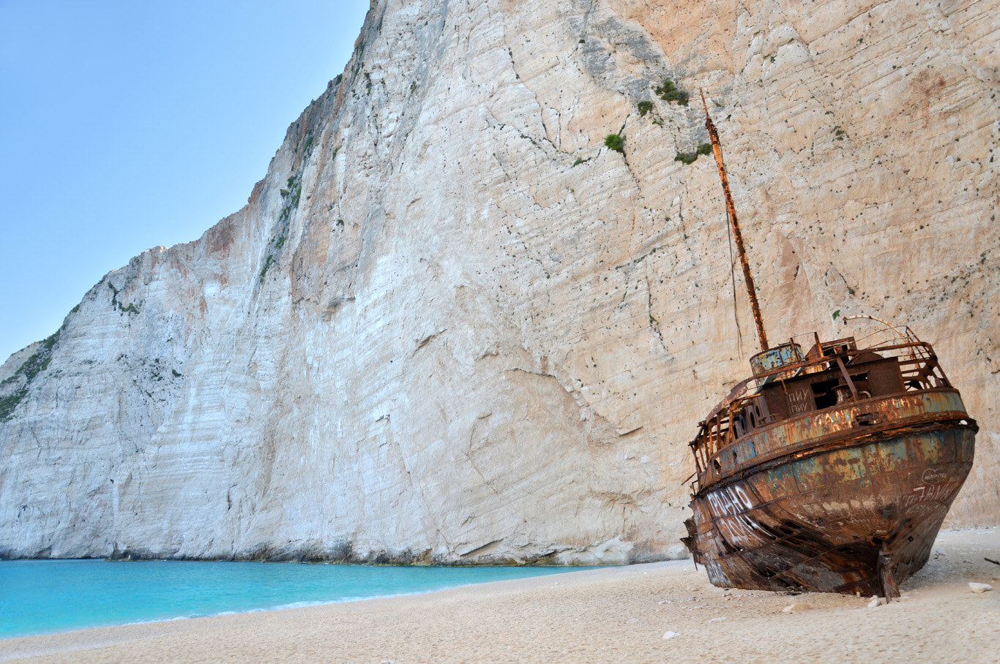

To je Santa Clara. To moc nevypadá, že by ještě někdy brázdila širá moře.
Britské námořnictvo odvedlo zatraceně dobrou práci. Je zázrak, že jsi přežil alespoň ty.

Odsud se dá jen vrátit zpátky na pláž.